第5天：语法分析之代码实现
第5天：语法分析之代码实现
上一节，我们完成了 csub 的文法构造。这一节，我们用代码实现语法分析。为了方便查询，我把所有产生式总结到一起了（代码中不一定全部用到）。
产生式汇总
1 | |
代码讲解
复习一下，token 就是词法分析得到的词法记号，例如 void， int, 标识符，数字，等等；词法分析的时候，我们写了一个非常重要的函数 get_token();每调用一次，就得到一个词法记号，保存在 token_g （symbol_e 类型）中；现在把这个函数封装一下：

第 129 行，如果当前的 token 是注释或者是无效的 token 就跳过，再次调用 get_token()；跳过注释好理解，对于无效的 token，为了不影响后续读取源文件，最简单的办法就是跳过。
再回顾一下之前介绍的递归下降分析法。
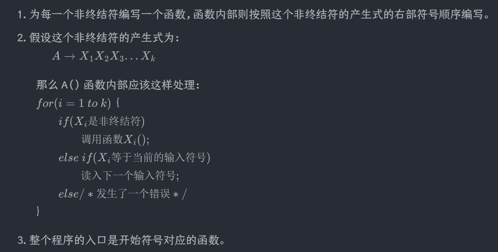
接下来，我们从开始符号 <program> 讲解代码。
每个函数上面的注释就是它关联到的产生式。请读者把产生式和代码对照着看，这样更好理解。
program()
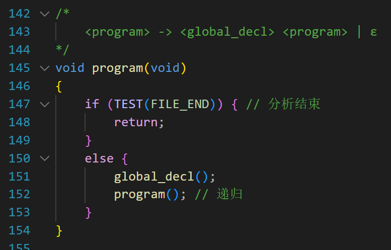
第 147 行的 TEST 是一个带参数的宏：
#define TEST(x) (token_g == (x))意思是判断当前的 token 是不是参数 x;
如果文件到了末尾，则第 147 行为真，直接 return 。这正是利用了产生式<program> -> ε
如果不是文件末尾，就用产生式 <program> -> <global_decl> <program>,对应 151~152 行。
所以，语法分析的代码并不难，就是把一个个非终结符变成函数，再对着产生式调用函数，就像搭积木一样简单。
global_decl()
上面第 151 行调用了 global_decl() 函数。我们看看这个函数的代码：
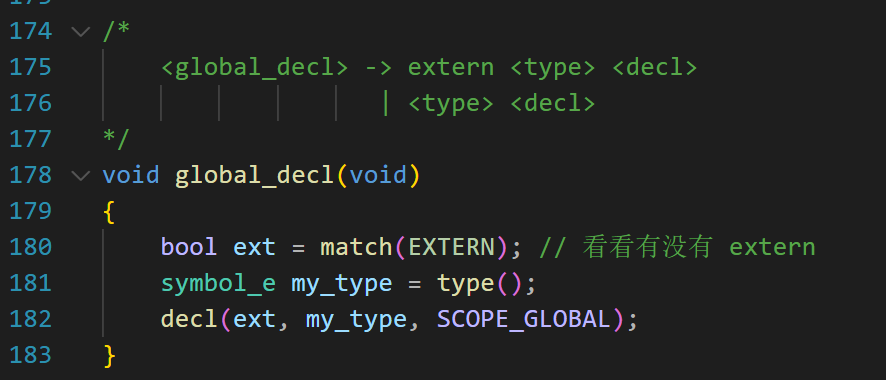
第 180 行，尝试匹配 “extern”。若匹配成功， ext 变量就是 true, 否则是 false；
第 181 行，用 type() 函数获取类型(int, char, void 中的一种)
match() 和 type() 后面会介绍。
第 182 行，调用 decl()； 第三个参数 SCOPE_GLOBAL 是一个宏，表示文件作用域。
1 | |
上节课，我们讨论过 <global_decl> 和 <local_decl>；
local_decl() 的代码如下图：
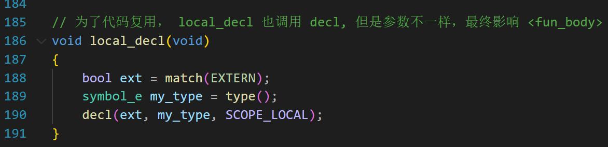
这二者的代码逻辑几乎一致，唯一不同的地方是在调用 decl 的时候，传入的第三个参数不同。
根据传入的参数是 SCOPE_GLOBAL 还是 SCOPE_LOCAL，最终会影响产生式 <fun_body> 的展开。
再回到 global_decl()，第 180 行调用了 match 函数，其代码是：
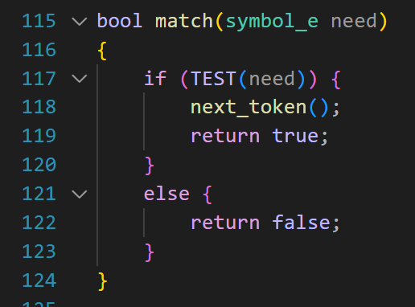
如果是我们想要的 token(等于参数 need), 则读取下一个 token（这点要记牢）, 返回 true;否则不读取，直接返回 false;
type()
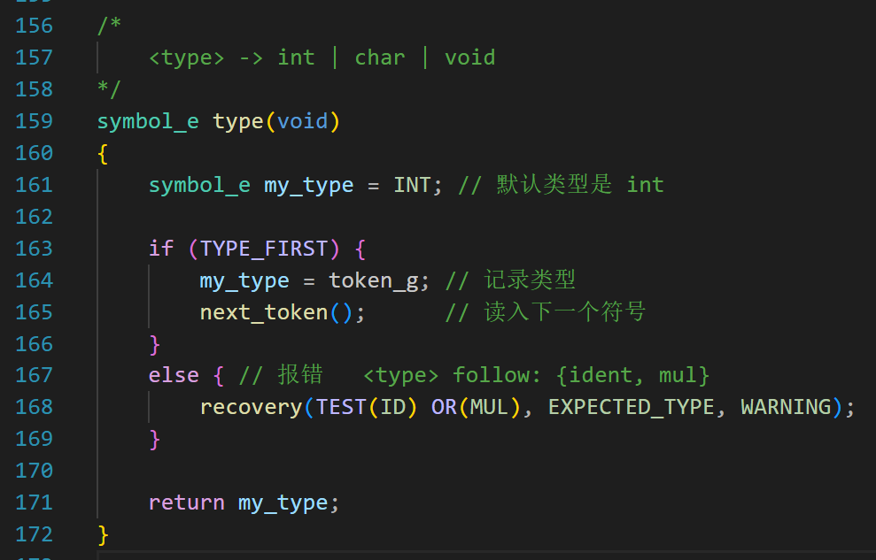
第 163 的 TYPE_FIRST 是宏
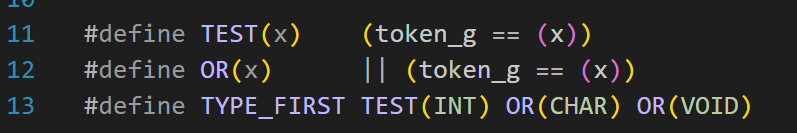
展开 163 行的代码就是 if((token_g == (INT)) || (token_g == (CHAR))|| (token_g == (VOID)))
如果这个条件成立，说明类型对上了；否则报错，执行第 168 行。关于错误处理和恢复放在本文的末尾。现在读者看到 recovery(…) 可以先跳过。
decl()
global_decl() 的最后调用了 decl()
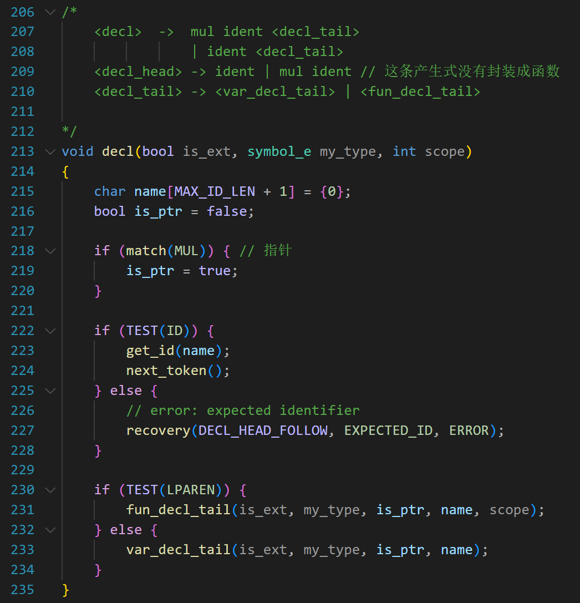
根据 207~208 行的产生式， 非终结符 <decl> 展开后的第一个 token 可能是“*”（表示指针）,然后是标识符，最后是 <decl_tail>；
第 215 行的 name 数组是为了保存标识符，当第 222 行匹配上 ID（标识符）后，会从全局变量 token_id_g 拷贝字符串到 name 数组，这是函数 get_id() 完成的。
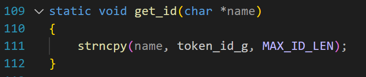
第 210 行，<decl_tail> 的产生式有 2 个： <var_decl_tail> 和 <fun_decl_tail>
遇到这种情况怎么处理？先写出 <var_decl_tail> 和 <fun_decl_tail> 的产生式：
1 | |
我们发现，<fun_decl_tail> 肯定以 “(” 开头， <var_decl_tail>肯定不是以 “(” 开头；
所以，230~234，根据当前 token 是不是 “(” 选择不同的产生式。
fun_decl_tail()
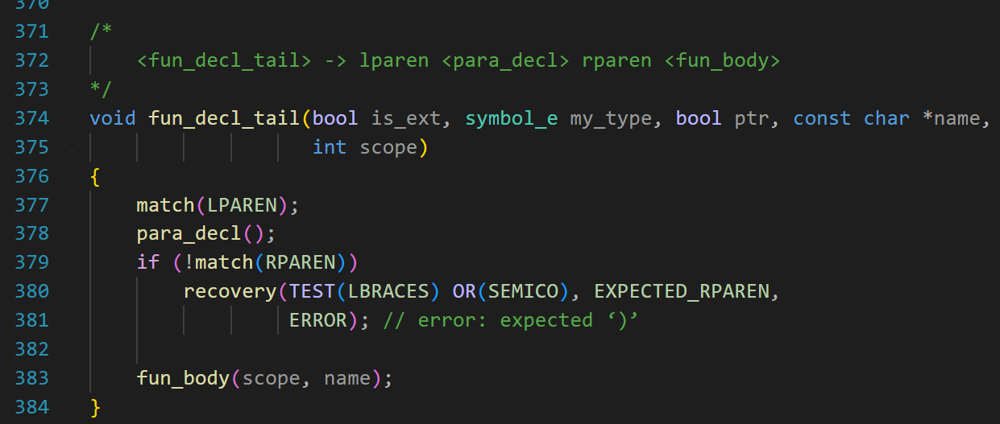
有的读者会问，怎么传进来的参数都没有用呢，比如第 374 行的 is_ext my_type ptr；
这是因为现在的代码还不是最终代码。为了降低学习难度，我们的代码是循序渐进的。担心语义分析的代码影响读者理解，我删除了很多代码，但是有的参数没有删除，所以就显得“用不上”，读者忽略这些参数就可以了。
这个函数代码很简单，我们关注第 378 行的 para_decl() 和第 383 行的 fun_body()
para_decl()

第 420 行，应用产生式 <para_decl> -> ε如果匹配到 “)”，直接返回；
第 424 行，如果匹配到 “void”, 分 2 种情况，一种是语法正确，例如“foo(void)”的写法，对应 425~426 行；
还有一种是错误的情况，需要错误处理。产生式只能给出正确的语法，并没有规定如何处理错误。所以在错误处理上因人而异，可以简单粗暴，也可以面面俱到。
我们简单一点，如果 void 的后面不是 “)”，先报语义错误，这里用 printf(…)占个位(等语义分析阶段，会把这行改成 semantics_error(…);)
然后继续往下执行，也就是执行 para_item()；
这样设计是为了处理参数不止一个的情况，例如 foo(void a, int b, int c)
当读入 a 的时候，发现第 425 行不成立 ，然后报语义错误，再然后执行 para_item()（代码见下图），因为这个函数一开头要匹配类型（439行），但是读入的是 a, 所以 type() 函数里面会报语法错误：“在 a 之前丢失 ‘类型’”；
再往后执行到第 446 行，标识符匹配成功，这样语法分析程序就回到了正确的流程上，后面的 “int b, int c” 也能正确解析。
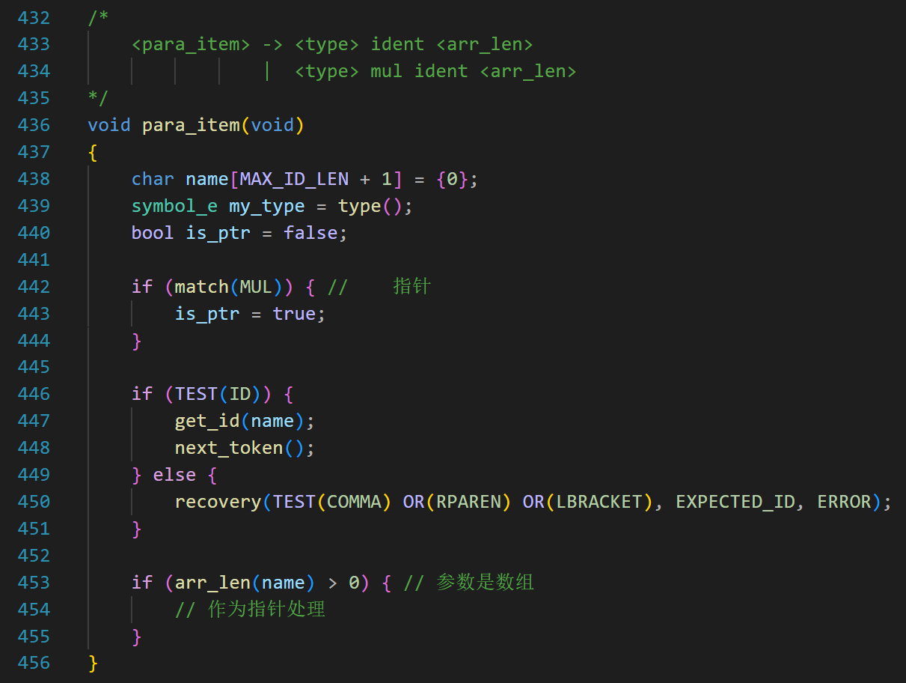
细心的读者可能发现了，对于 void *p 这样的写法，csub 会报错。是的，csub 暂时不支持 void * 类型的指针。
通过前面的讲解，相信读者已经入门了，把产生式转换成代码并不难。
整个 parser.c 的代码有 1000 多行，没有必要一一分析，因为思路都一样。下面我选几个重点函数讲解。
fun_body()
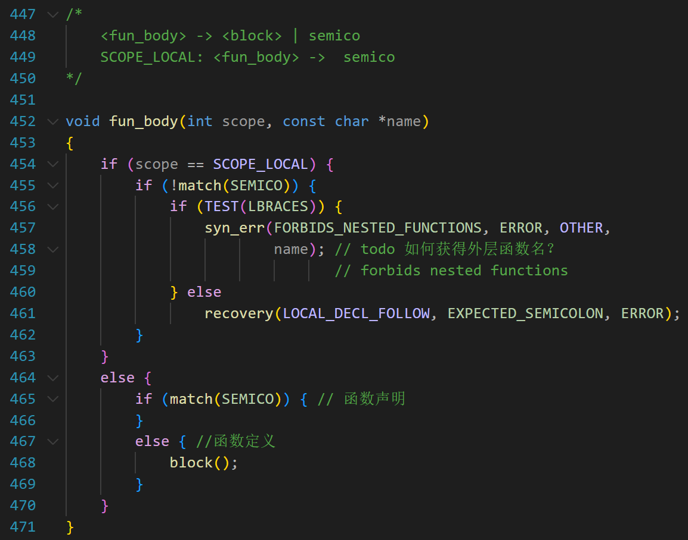
第 452 行，参数 scope 的源头是调用 decl（） 时传入的，要么是 SCOPE_LOCAL，要么是 SCOPE_GLOBAL；上一节已经解释了，函数定义里面不能再定义函数，所以只能有产生式 <fun_body> -> semico ，也就是必须匹配分号，不然就报错，这就是代码 455~462；
如果 scope == SCOPE_GLOBAL，利用产生式 <fun_body> -> <block> | semico;
匹配上 “;” 说明是函数声明，直接返回；否则，认为是函数定义，调用 block();
有人会问，万一既不是 “;” 又不是 “{” 怎么办？
这种情况， block() 函数会处理，会报错 “{” 丢失。代码就不贴了，请同学们下载配套代码做实验验证。
arr_len()
这个函数是为了处理数组下标，例如[xxx]和[]；也可能不是数组，那么就没有这部分。
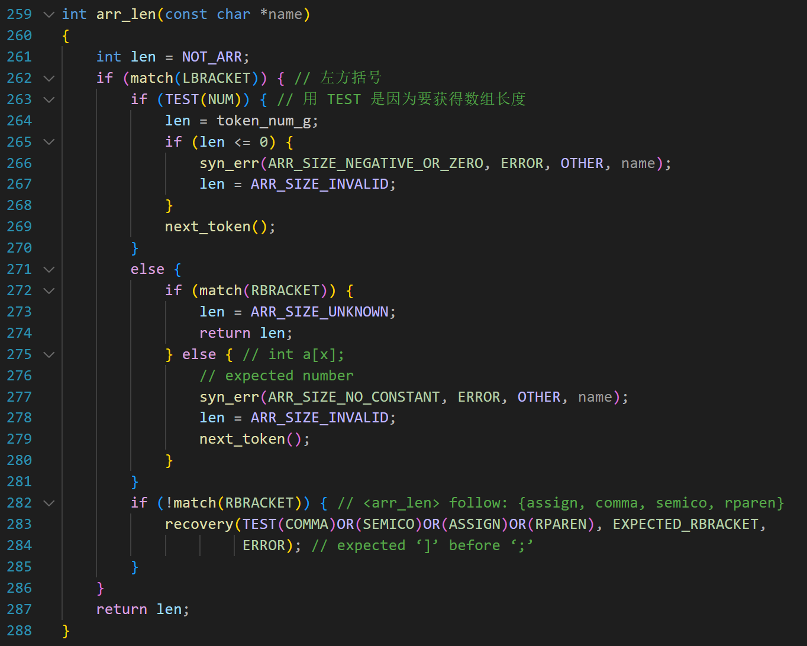
1 | |
1 | |
第 261 行，局部变量 len 的初始值是 NOT_ARR，也就是默认不是数组。
第 262 行尝试匹配 “[”，如果没有匹配到就执行第 287 行，返回 len;这利用了产生式 <arr_len> -> ε
如果匹配到 “[”，就读入新的 token, 分三种情况：
1）是数字常量，这时候从 token_num_g 取出具体的数字给 len;如果小于等于 0 ，就报错，同时让 len = ARR_SIZE_INVALID；因为数组的长度必须是正整数。
2)是 “]”,说明没有指定数组长度，那么让 len = ARR_SIZE_UNKNOWN；到了语义分析的时候，我们再处理；
3）其他，大概率是个变量， csub 不支持这种情况。
细心的读者发现，如果是 [1+2+3] 这种写法，csub 也会报错；是的，因为 csub 不支持常量表达式；
代码中有多个地方调用了 arr_len();
比如说 var_decl_tail()
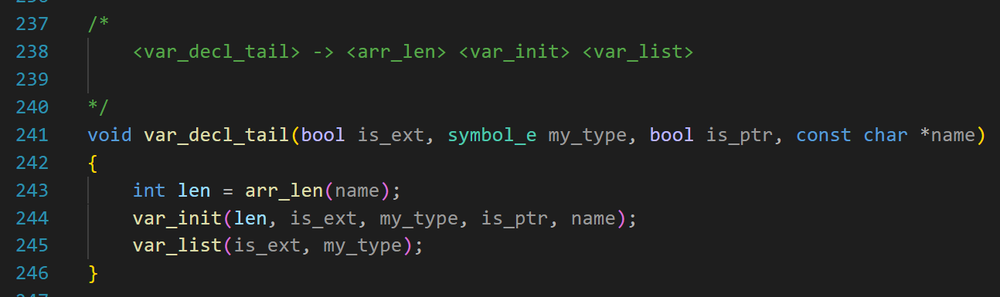
第 243 行，调用 arr_len()，得到的返回值 len 作为 var_init 的参数。
我们看一下 var_init()

根据第 295 行的产生式，<init_expr> 可以推导出 <expr>,也可以推导出<arr_init_list>
如何选择产生式呢？答案是根据参数 arr_len，如果不等于 NOT_ARR, 说明前面解析到的是数组，就调用 arr_init_list()；否则，调用 expr()；
深入理解结合性
下面，我们讲表达式部分的代码，仅举几个典型的例子。
这是乘性表达式的代码。
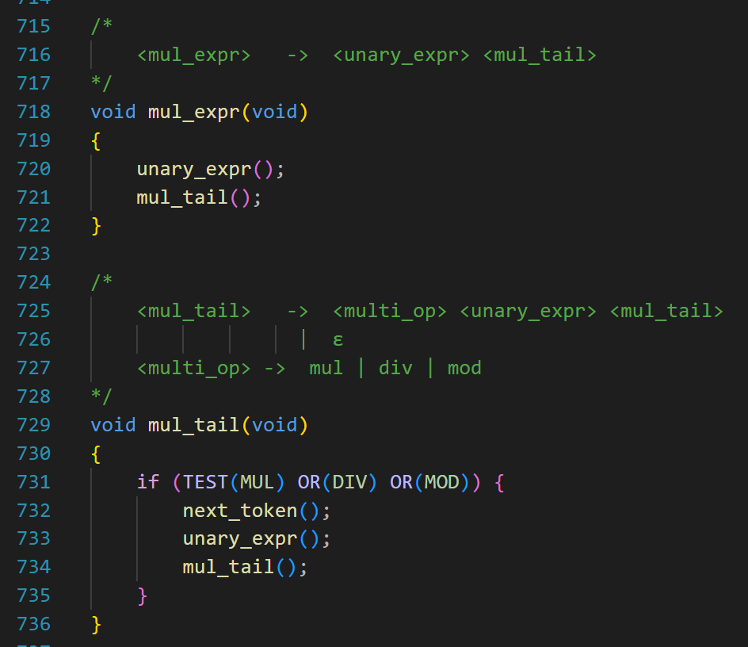
对于 731 行，只有在匹配到 “*”、“/”、“%”的时候，才用产生式
<mul_tail> -> <multi_op> <unary_expr> <mul_tail>
否则就什么都不做，把当前的 token 交给后面的程序分析。
上一节说过，结合性是语义分析的工作，不过这里提前讨论也无妨。
这节的配套代码，为了让大家理解什么是语法分析、如何把产生式变成函数，我尽可能删去无关的代码，甚至把大部分函数的参数和返回值都删了。打个比方，一个有血有肉的人，被我删得就剩骨头架子了。事实上，编译器的代码不是这样的。
以乘性表达式为例，csub 最终代码大概率是这样：
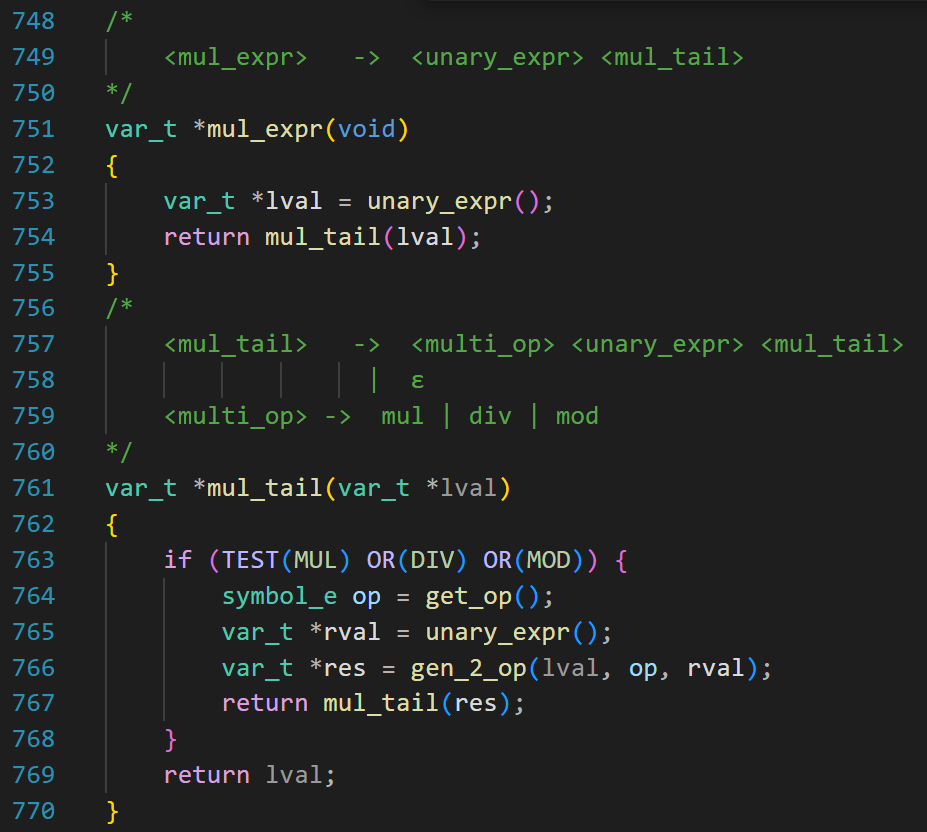
先看 751 行，var_t 类型，是一个自定义的结构体，里面有很多字段，例如变量的名字、类型，如果是基本类型，还包括变量的值。总之，现在读者知道这是个结构体就够用了。
753 行， 调用 unary_expr() 函数解析一元表达式（例如 ++a ****p sizeof(m) -100 &i）
unary_expr() 函数的返回值是一个指向 var_t 类型的指针，保存在变量 lval 里面。可以简单理解为 lval 就是一元表达式的值。
754 行，调用 mul_tail() 的时候，把 lval 做为参数传进去；
761行，进入 mul_tail() 函数， 假设可以匹配 “*”、“/”、“%”中的一个，先调用 get_op 得到具体的运算符。
get_op() 函数代码如下:
1 | |
765 行，再次调用 unary_expr() 函数解析一元表达式，这次得到结果 rval。
766 行，把 lval、 op、 rval 传递给函数 gen_2_op()，这个函数会生成实际的计算代码，并返回计算结果，保存到 res 中；
767 行， 把 res 作为参数，递归调用 mul_tail();
假设 4 个一元表达式相乘，执行逻辑如下图：
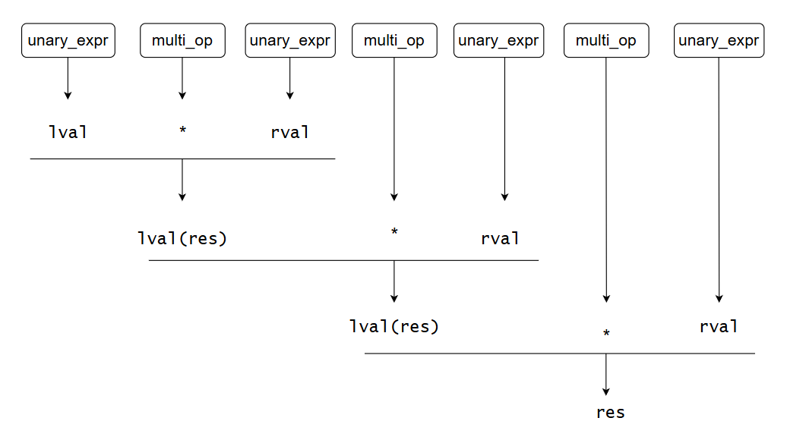
代码的执行流程是：
1）执行mul_expr()， 先拆出图中第一个一元表达式，求值后作为 lval 传递给 mul_tail() 函数
2）执行mul_tail()，拆出 multi_op，再拆出图中第二个一元表达式求值后作为 rval，调用 gen_2_op() 完成“lval * rval”的计算，然后把计算结果 res 作为参数传给 mul_tail()
3） 重复第 2）步，执行mul_tail(），拆出 multi_op，再拆出图中第三个…
4） 重复第 2）步, 执行mul_tail()，拆出 multi_op，再拆出图中第四个…
5）执行mul_tail()，发现没有 multi_op 了，直接返回传进来的 res;
回到 4） mul_tail()拿到结果 res,返回;
回到 3） mul_tail()拿到结果 res,返回;
回到 2） mul_tail()拿到结果 res,返回;
回到 1） mul_expr()拿到结果 res, 这就是最终的结果;
从图中可以很容易看出，乘法运算的结合性是左结合。
作为对比，我们看看赋值表达式的代码。本节的配套代码是这样的：
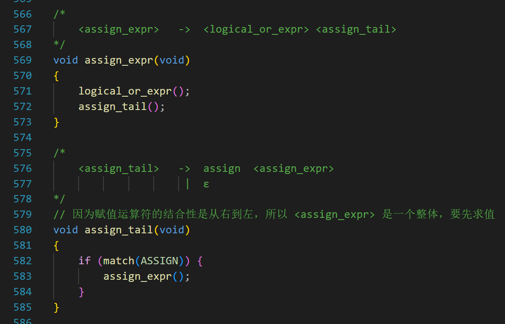
细心的同学会发现问题：上节课我们构造的 <assign_tail> 的产生式是这样的：
1 | |
可是第 576 行写的产生式是 :
1 | |
到底哪个才是正确的？
其实都是正确的。但是，因为赋值运算符的结合性是右结合，所以产生式 A 中的 <logical_or_expr> 不应该和左边的 assign 结合，而应该和右边的 <assign_tail> 结合。因此我把 A 产生式变形为产生式 B；
同样，我们看一下最终的代码：
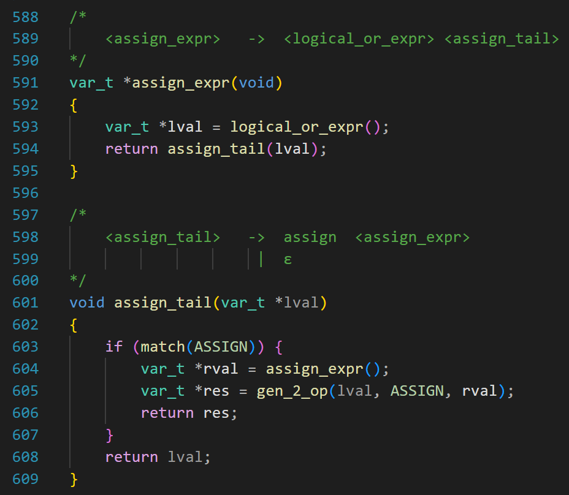
第 591行，是赋值表达式的入口，先解析更高优先级的逻辑或表达式，把结果作为参数 lval 传给 assign_tail()；
第 603 行，如果能够匹配“=”，就把“=” 后面的部分作为一个整体来解析，解析后的值是 rval;
第 605 行，把 lval、 “=”、 rval 传递给函数 gen_2_op()，生成实际的计算代码，并返回计算结果，保存到 res 中，最后返回 res;
前面的递归是因为 mul_tail()自己调用自己，这里的递归是因为 assign_expr() 和 assign_tail() 互相调用。
为了帮助读者理解赋值运算的右结合以及递归调用的逻辑，请看下图：
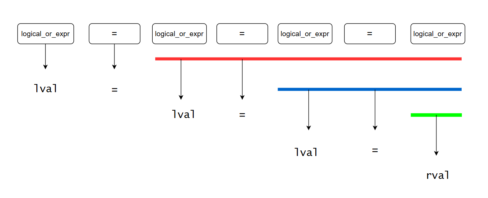
1）首先，第一次执行 assign_expr()，先拆分出最左边的逻辑或表达式，把它的值作为参数 lval 传给 assign_tail()；
2）assign_tail() 拆出一个“=”，然后调用 assign_expr() 解析划红线的表达式；
3）assign_expr()拆出一个逻辑或表达式，把它的值作为参数 lval （红线最左边的箭头）传给 assign_tail()；
4）assign_tail() 拆出一个“=”，然后调用 assign_expr() 解析划蓝线的表达式；
5）assign_expr()拆出一个逻辑或表达式，把它的值作为参数 lval （蓝线最左边的箭头）传给 assign_tail()；
6）assign_tail() 拆出一个“=”，然后调用 assign_expr() 解析划绿线的表达式；
7）assign_expr()拆出一个逻辑或表达式（对应图中最后一个 logical_or_expr），把它的值作为参数 lval （绿色下面的箭头）传给 assign_tail()；
8）assign_tail() 没有匹配上“=”，把参数 lval 返回给调用它的 assign_expr()，也就是 7） 的 assign_expr()；
随着 8） 中 assign_tail() 的返回，7） 中 assign_expr()也返回了，把划绿线表达式的结果返回给 6），对应代码第 604 行，这个 rval 就是最后一个逻辑或表达式的值；
回到 6） assign_tail() 拿着 5）传给它的参数 lval, 还有“=”，还有 assign_expr()得到的 rval（绿色），调用 gen_2_op() 完成计算,并返回计算结果（蓝线部分的结果）；
随着 6）中 assign_tail() 的返回，5） 中 assign_expr()也返回了，把划蓝线表达式的结果返回给 4）；
回到 4） assign_tail() 拿着 3）传给它的参数 lval, 还有“=”，还有 assign_expr()得到的 rval（蓝色），调用 gen_2_op() 完成计算,并返回计算结果（红线部分的结果）；
随着 4）中 assign_tail() 的返回，3） 中 assign_expr()也返回了，把划红线表达式的结果返回给 2）；
回到 2） assign_tail()拿着 1）传给它的参数 lval, 还有“=”，还有 assign_expr()得到的 rval（红色），调用 gen_2_op() 完成计算,并返回计算结果（整个表达式的结果）；
随着 2）中 assign_tail() 的返回，1） 中 assign_expr()也返回了，这样就得到了整个表达式的值。
虽然 token 是从左往右读入的，但是程序的逻辑保证了“=”的右结合。请读者仔细体会。
post_expr()
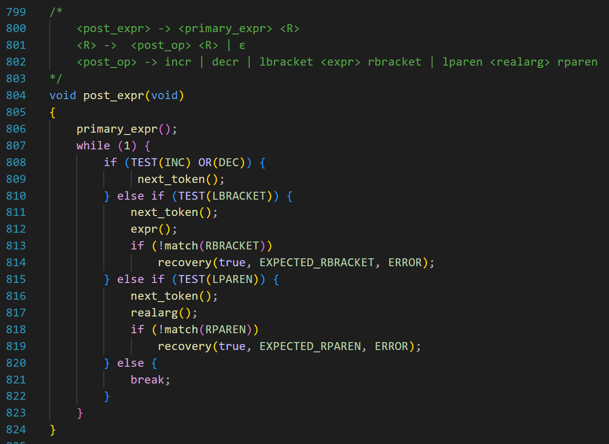
根据第 801 行的产生式，<R>可以推导出 0个到多个 <post_op>
干脆来个 while(1)，一直循环，直到遇到的 token 无法匹配“++”、“–”、“[”、“（”，就跳出循环。
第 817 行调用了 realarg()，表示函数调用的实际参数。
realarg()
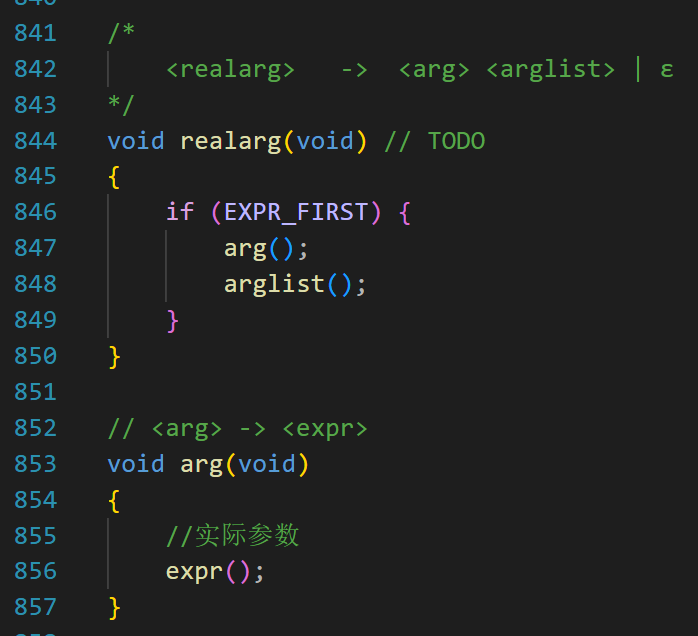
第 842 行， <realarg> -> <arg> <arglist> | ε
前文说了 mul_tail 函数，再看看它的代码：
1 | |
第 8 行的代码很容易理解，因为 <multi_op> 的第一个 token 就这三种（*，/，%）。
但是<arg>展开后第一个终结符是什么?
为了解决这个问题，我们要了解一下 First 集。
First 集
被定义为可以从 推导得到的串的首符号的集合，其中 是任意的文法符号串。
这里的“串”，可以理解为符号的有穷序列。
假设有下面的产生式。
开始符号是<句子>
1 | |
我们来求 FIRST(<句子>)
换句话说，把 <句子> 能推导出的所有串都考虑到，看看这些串的首个终结符是什么？
非常明显，这个文法一共就 4 个句子：
我吃饭
我跑步
你吃饭
你跑步
第一个终结符是“我”或者“你”，所以得出FIRST(<句子>) = {“我”, “你” }
好了，回到刚才的问题， <arg>所能推导出的串的第一个终结符是什么？
其实就是求它的 FIRST 集。
如何求 First 集？下面的内容属于进阶部分，不理解的同学可以跳过，直接看后面我的推导。
如果 X 是终结符，则 FIRST(X) = X;
也就是说终结符的 First 集是它自己。
对于非终结符 X，计算 FIRST(X)的规则如下：
遍历 X的所有产生式 X → α₁ | α₂ | ... | αₙ，对每个 αᵢ计算 FIRST(αᵢ)。
如何计算 FIRST(αᵢ)呢？
假设非终结符 X 的一个产生式为
-
如果 是终结符，则
-
如果 是非终结符 ，则把 加入
-
如果 能推导出
ε，则把 加入 -
如果 能推导出
ε，则把 加入 -
依此类推，直到 不能推导出
ε -
如果 是一个产生式，则把 加入
现在，可以计算任何串 的 FIRST 集合：
-
把 加入
-
如果 ，把 加入
-
如果 ，把 加入
-
依此类推，直到
-
如果对所有的 , 都在 中，那么把 加入
下面我们来求<arg>的 FIRST 集。
1 | |
因为，<arg> -> <expr>所以问题转为求 <expr> 的 First 集
又因为<expr> -> <assign_expr>所以问题转为求 <assign_expr> 的 First 集
又因为 <assign_expr> -> <logical_or_expr> <assign_tail>
所以问题转化为求 <logical_or_expr> 的 First 集，继续推导下去，…
最后问题转化为求 <unary_expr> 的 First 集。因为它有 2 个产生式（上面第 6 行），所以转换为求 <unary_op> 和 <post_expr> 的 First 集
因为 <unary_op> -> incr | decr | add | sub | not | mul | lea | sizeof
所以，First(<unary_op>) = {incr, decr, add, sub, not, mul, lea, sizeof}
因为<post_expr> -> <primary_expr> <R>
所以 <post_expr> 的 First 集转化为求 <primary_expr> 的 First 集
因为<primary_expr> -> ident | lparen <expr> rparen | <literal>
且 <literal> -> num | string | chara
所以 First（<primary_expr>） = {ident, lparen, num, string, chara}
综上， First(<expr>)={incr, decr , add ,sub , not , mul , lea , sizeof, ident, lparen, num, string, chara}
所以代码中有
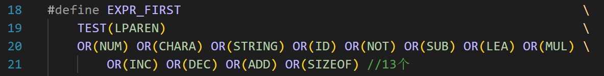
再回到前面的代码
846 行，就是判断当前的 token 是不是属于 <expr> 的 First 集
Follow 集
说完了 First 集，还有 Follow 集。对于非终结符 A， Follow（A）被定义为可能在某些句型中紧跟在A右边的终结符号的集合。
通俗解释，某个非终结符后面可能紧跟哪些终结符？
假设我们有这样一个简单的语法规则.
开始符号是<句子>
1 | |
请问 Follow(<主语>) 是什么？
因为<主语> 后面是 <谓语>，而 <谓语> -> “吃饭” | “跑步”
所以 Follow(<主语>) = {“吃饭” ，“跑步” }
下面的内容适合学有余力的同学，业余选手可以跳过。
Follow 集可以通过以下三个规则求得，计算所有非终结符 A 的FOLLOW(A) 集合时，不断应用下面的规则，直到再没有新的终结符可以加入到任意 FOLLOW 集合中为止。
- 初始规则：将输入结束符
#加入文法开始符号的 Follow 集。 - 中间规则:若存在产生式
A → αBβ，将FIRST(β)中除ε（空串）之外的所有符号加入FOLLOW(B)中。 - 传递规则：若存在产生式
A → αB或A → αBβ且FIRST(β)中包含ε，则将FOLLOW(A)中的所有符号加入FOLLOW(B)中。
注意：
FOLLOW 集中没有 ϵ ；
FOLLOW 集从产生式右侧推导，例如求 A 的 FOLLOW 集时，要从产生式右侧找到 A，然后根据 A 右侧的符号信息，求出 A 的 FOLLOW 集；
有读者要问，学 FOLLOW 集有什么用？别着急，后面就用上了。
错误处理
以 case_stat 函数为例
1 | |
第 10 行，假如没有匹配到“:”,就报错，说“:”丢失（其实还要打印文件名、行号和列号，这里略去）。
用来测试的代码如下 。我们测试的目的是想看看报错后，解析程序能否正确解析出 2~4 行。
1 | |
测试结果没有问题。分析一下：读入 “case”后, 第 8 行为真，继续读入 “10”，执行 case_label();
case_label（） 函数里面，会读入下一个符号，也就是“a”
这时候执行到第 10 行，“a”匹配“：” 失败，没有继续读入，报错。
然后执行 subprogram_in_switch();
因为 “a” 就在 <subprogram_in_switch> 的 FIRST 集里，所以解析又回到了正轨上。
但是，如果我一走神，把冒号写成逗号了：
1 | |
这时候再运行语法分析程序，就会报错一大片，例如：
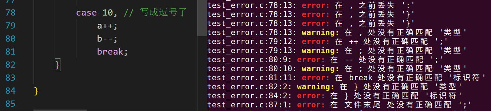
为何会这样呢？
再捋一捋代码逻辑，当 “,” 匹配 “:” 失败后，没有继续读入，报错
在 , 之前丢失 ‘:’
然后，语法分析程序推导不出以 “，”开头的句型， 又没有其他的错误恢复机制，进而一错再错。
例如，图中第一个 warning 说
在 , 处没有正确匹配‘类型’
这是因为语法分析程序用<type> ident semico去匹配 ,a++;
“,” 匹配不上<type>；“a” 可以匹配 ident； “++” 匹配不上semico。
第一种情况， subprogram_in_switch() 从 “a” 开始解析，第二种情况， subprogram_in_switch() 从 “,” 开始解析。
如果编译器聪明一点，遇到第二种情况时，把 “,” 扔了（也就是再读入一个 token），就可以从 “a” 解析了。
如何判断要不要再读一个 token 呢？前面已经剧透了，就是利用 First 集。
在处理产生式 的时候，假设 是某个终结符，但是当前读入的 token 和它不匹配， 我们就考察 的 First 集，如果当前读入的 token 在这个集合里面，就报错 丢失，然后从当前的 token 继续解析；否则报错当前的 token 和 不匹配，然后再读入一个 token，继续解析。
如果觉得抽象，把刚才的例子代入进来，再解释一遍。
在处理产生式 的时候，比如下面的产生式：
<case_stat> -> case <case_label> colon <subprogram_in_switch> <case_stat>
假设 是某个终结符，但是当前读入的 token 和它不匹配，比如说：
解析到终结符 = colon（就是“:”）的时候，当前读入的 token（可能是“a”,也可能是“,”） 和它不匹配， 我们就考察 的 First 集，也就是 <subprogram_in_switch> <case_stat> 的 First 集
-
如果当前读入的 token 在这个集合里面(比如
a)，就报错 (“:”)丢失; -
如果当前读入的 token 不在这个集合里面(比如
,)，就报错当前的 token（,） 和 (“:”)不匹配，然后再读入一个 token，继续后面的解析。
有的同学会问，就算是第二种情况，再读一个符号，也不能保证它就在 First 集啊。
是的。这种情况可以读入更多的词法记号，直到读入的记号在我们需要的 First 集中。读者可以编写自己的错误恢复代码，测试程序的健壮性。
下面是比较枯燥的公式，不感兴趣的同学可以跳过。
需要注意，这里的 定义和前面的不太一样：
- 如果 不能推导出 ε，则
- 如果 能推导出 ε，则
- 如果 能推导出 ε，则
- 如果从 到 都能推导出 ε，那还要在 里面加入
follow 集就是在这里用上的。
现在推导 <subprogram_in_switch> <case_stat> 的 First 集。
因为 <subprogram_in_switch> 可以推导出 ε，且 <case_stat> 可以推导出ε；
所以
回到刚才的代码：
1 | |
注意第 6 ~8 行，当匹配不到“:”时，我们考察当前的 token 是否在 <subprogram_in_switch> <case_stat> 的 First 集中。
根据前面的计算，First 集是{STATEMENT_FIRST, LBRACES, CASE, DEFAULT, RBRACES }
STATEMENT_FIRST 表示非终结符 <statement> 的 First 集，这里面都包括什么呢？
代码中第 6 行的 STATEMENT_FIRST 是一个宏，展开后是
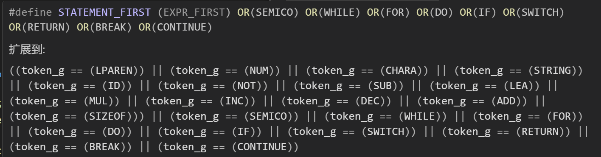
总之，<subprogram_in_switch> <case_stat> 的 First 集包括上面这些符号，再加上 LBRACES, CASE, DEFAULT, RBRACES，这就齐活了。
代码中用到的 First 集是提前计算好的，用类似上面的宏直接写死在代码里面了。
现在看看 recovery 函数。
recovery 第一个参数就是判断当前符号是否在集合里面，例如上面的图，宏展开后类似这样，其实就是笨办法，全部判断一遍。
如果为真，说明 token_g 就在集合里，报错丢失（第162行），否则报不匹配，然后再读入一个 token(164~165行)
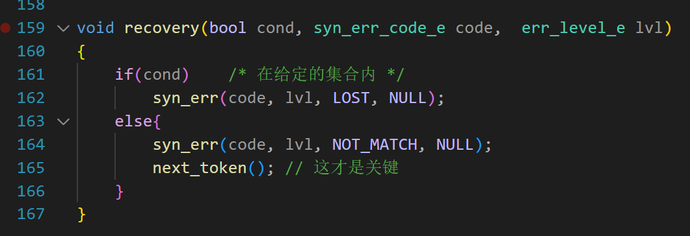
第 164 行的 syn_err 函数如下：
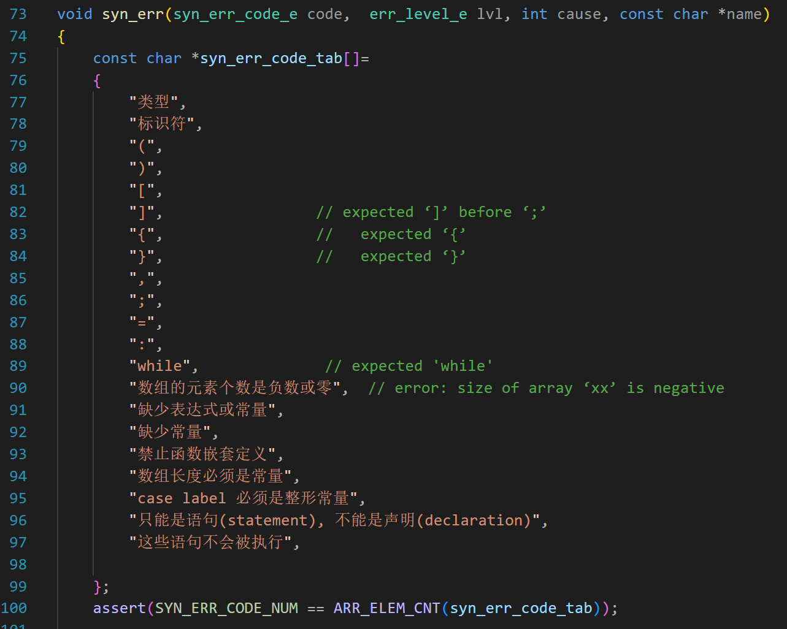
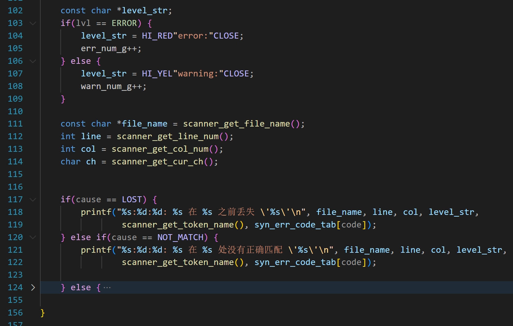
77~97 列举出了各种语法错误，和错误码 一一对应。
103~109 根据传入的 lvl 参数判断是 error 还是 warning，给字符串指定不同的颜色。
111~114 获取文件名字、行号、列号；
剩下的就是打印错误。
main 函数
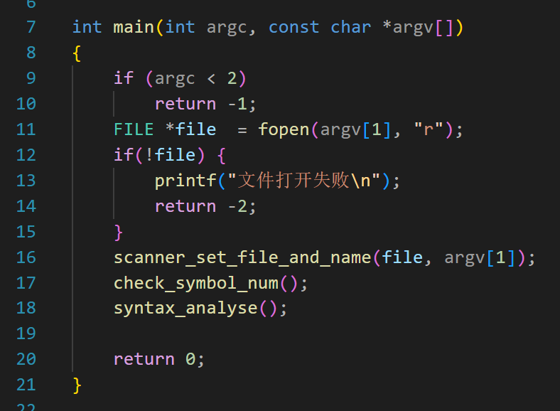
第 18 行就是语法分析的入口函数。
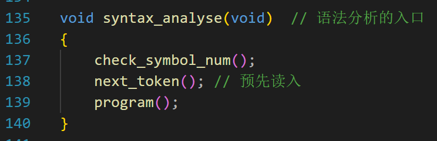
第 139 行， program(),本文开头已经介绍了。
成果展示
我们先来一个符合语法规则（但不一定语义正确）的代码：
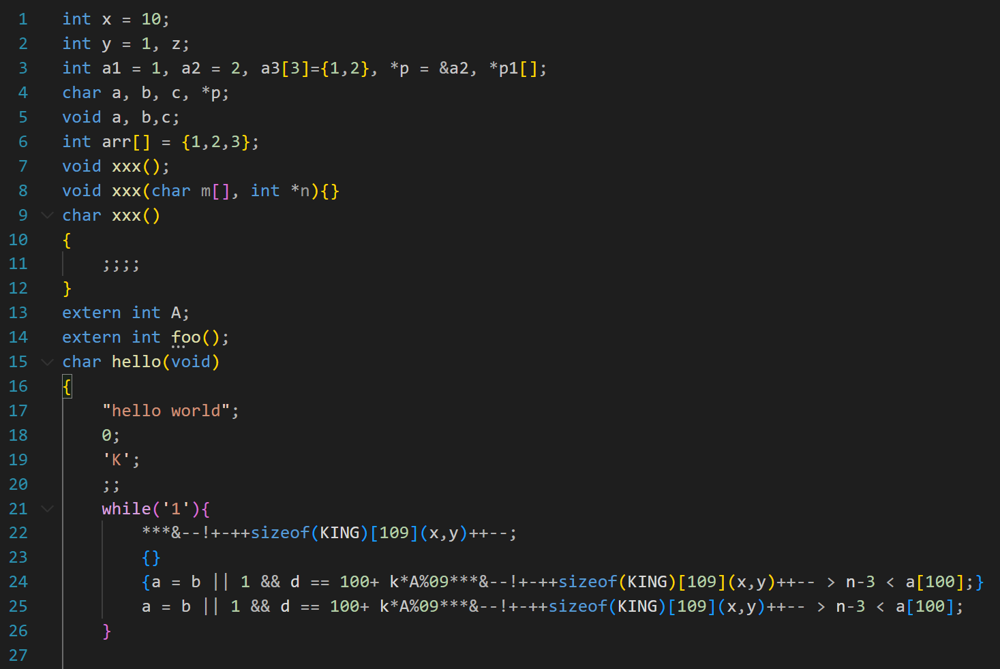
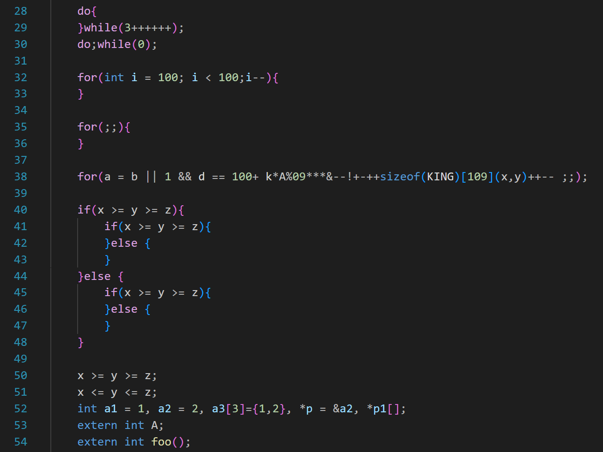
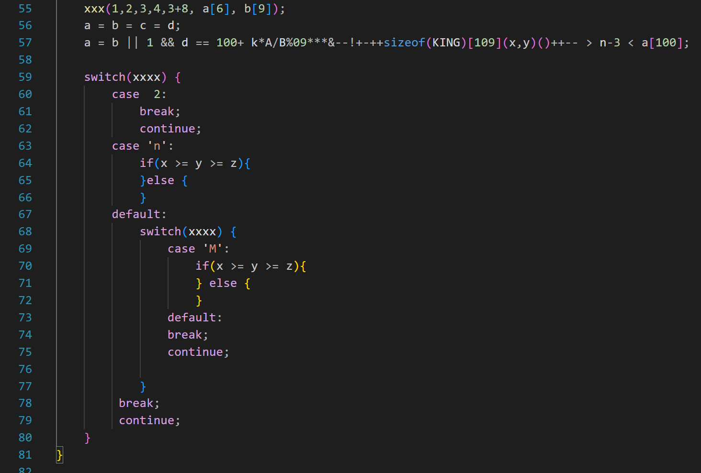
这段代码几乎包括了 csub 定义的所有语法。用我们的程序分析，没有报错误和警告，符合预期。
接下来，以这段代码为基础，故意加一些语法错误，看看 csub 能否准确指出错误或者警告。
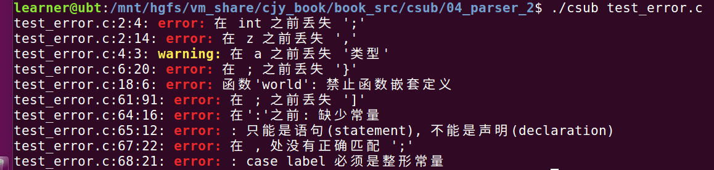
为方便读者查看，我编辑了如下的图片：
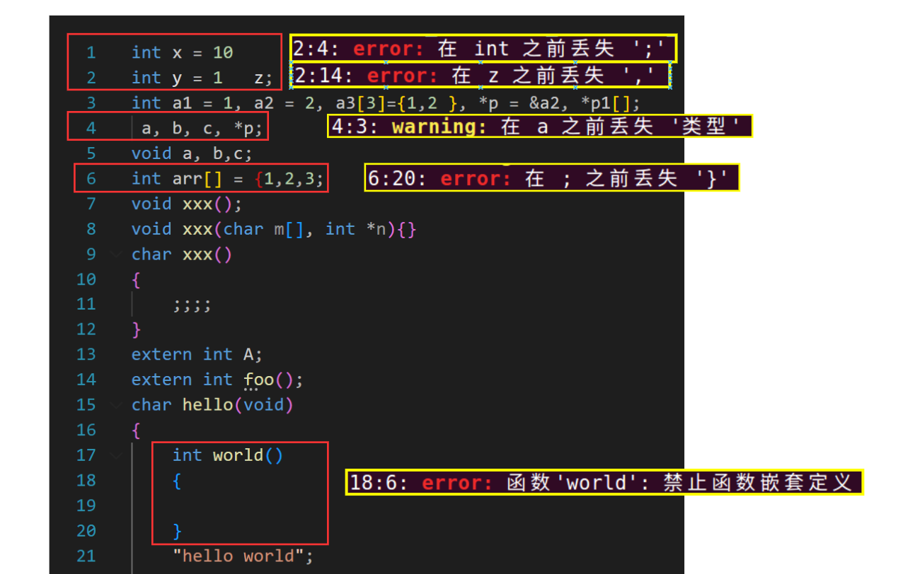
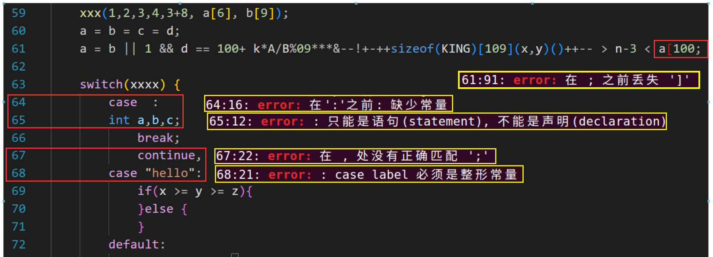
总的来说，效果还可以。
函数实在太多了，我只能选择重点的函数讲解，还请读者理解。
本文的内容就到这里了。欢迎读者下载代码并动手折腾！尤其是错误处理，捣鼓捣鼓挺好玩的：）